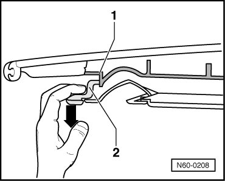

Sunroof Solar Panel, Adjusting Height
Sunroof with Solar Panel
Sunroof Solar Panel, Adjusting Height
- Open the sunroof about 10 cm.
- Pull the trim - 2 - in the center - arrow - out of the mount - 1 -.

- Push the trim back.
- Move solar panel to zero position.
- To prevent wind noise, adjust the front and rear height of the solar panel as shown in the illustration.
Front panel adjustment:

- a - = 0 to 1 mm lower than roof
- Arrow - = Direction of travel (forward)
Rear panel adjustment:

- b - = 0 to 1 mm higher than roof
- Arrow - = Direction of travel (forward)
- Tighten the solar panel bolts to 4.5 Nm.